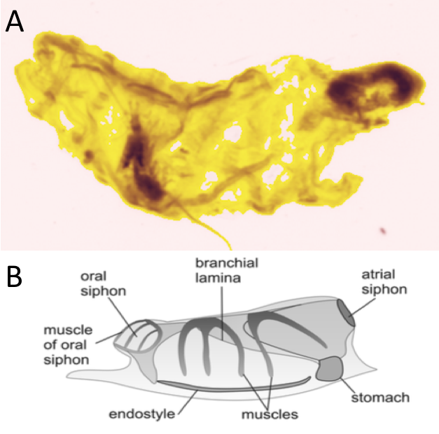
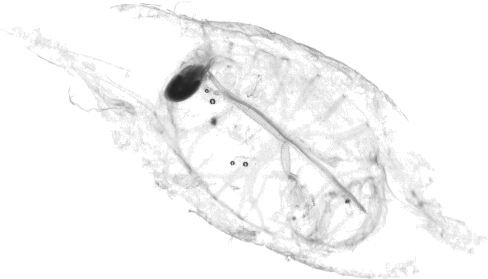
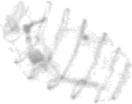
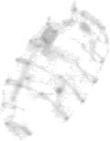
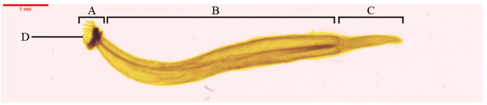

source("R/init.R")
vigns <- fs::dir_ls(
here::here(training_dir, "Plankton_gelatinous"),
type = "file", glob = "*.png", recurse = TRUE)4 Plankton_gelatinous
4.1 Tunicata
Les tuniciers constituent un sous-phylum des Chordés. Leur nom provient de la tunique produite par l’épiderme, les recouvrant. Le stade larvaire de ces organismes possède une notochorde (dépourvue au stade adulte) (Ruppert, Fox, et Barnes 2004).
4.1.1 Thaliacea
4.1.1.1 Salpida
4.1.1.1.1 salpidae
Ces organismes sont transparents ce qui se marque par le jaune très claire sur les vignette. Le cerclage de bande musculaire présent chez les Doliolida n’est pas présent. Il y a cependant bien la présence de muscle. On ne retrouve pas la forme de tonneaux des Doliolida ( Section 4.1.1.3 ) .

La Figure 4.1 présente plusieurs vignettes de Salpidae.
plot_vignettes(vigns, group = "Salpidae")Ce groupe est similaire au groupe salpida dans le ZooScanNet (Figure 4.2) .


4.1.1.2 Pyrosomatida
4.1.1.2.1 Pyrosomatida
Nouveau groupe
Dans les précédentes études (et les sets d’apprentissages associées), ce groupe n’a pas été discriminé.
Les pyrosomes peuvent former de grandes colonies tubulaires de plusieurs mètres. Ils sont constitués de milliers de blastozoïdes dont la tunique est fusionnée et le siphon buccal s’ouvre au centre du tube (Caicci et al. 2013).
Dans le ZooScanNet, on les retrouve très souvent sous forme de colonies (Figure 4.4). Le pharynx est discernable sur chaque image.
4.1.1.3 Doliolida
Ces organismes ont l’aspect d’un tonneau symétrique doté d’un cerclage de plusieurs cercles (Figure 4.5). Les cerclages sont des muscles entourant le corps de l’organisme.

La Figure 4.6 présente plusieurs vignettes de Sagittoidea. Cet organisme est transparent comme l’indique les parties jaunes claires sur les vignettes. Les bandes musculaires qui entoure l’organisme apparaissent plus foncée. La cavité plus dense est l’estomac.
plot_vignettes(vigns, group = "Doliolida", nx = 3,ny = 2)Ce groupe est similaire au groupe doliolida dans le ZooScanNet ( Figure 4.7 ).


4.1.2 Appendicularia
4.1.2.1 Copelata
4.1.2.1.1 Oikopleuridae
4.1.2.1.2 Fritillariidae
4.1.2.2 Appendicularia_tail
4.2 Chaetognatha
Les Chaetognatha sont des prédateurs pélagiques bien étudiée. Ils sont les principaux prédateurs des copépodes. La Figure 4.8 montre les 3 parties caractéristiques de ces organismes : tête, tronc, queue (Pierrots-Bults 2017) .

Les nageoires sont utilisées afin de déterminer les espèces des chaetognathes (Pierrot-Bults 2020). L’analyse d’image qui permet d’obtenir les vignettes ne permet pas de conserver une précision suffisante des nageoires (Dugauquier 2019).
4.2.1 Sagittoidea
On discrimine les Phragmophora, des Aphragmophora de par la présence d’un musculature transversale et des structure glandulaires sur la surface du corps abondante. Dugauquier (2019) a approfondi la classification en Krohnittidae, Sagittidae et Eukrohniidae (voir (Dugauquier, Engels, et Grosjean 2019) ). Cette discrimination est complexe sur base des vignettes.
La Figure 4.9 présente plusieurs vignettes de Sagittoidea.
plot_vignettes(vigns, group = "Sagittoidae")
Ce groupe est similaire au groupe chaetognatha dans le ZooScanNet ( Figure 4.10 ).
4.2.2 Chaetognatha_head
Nouveau groupe
Dans les précédentes études (et set d’apprentissages associées), ce groupe n’a pas été discriminé.
Lors de l’échantillonnage, ces organismes peuvent être divisé en fragments. La tête est séparée du tronc et la queue ( Figure 4.11 ). Ce groupe reprend les têtes des organismes nommé head dans le ZooScanNet (Elineau et al. 2018).

4.2.3 Chaetognatha_tail
Nouveau groupe
Dans les précédentes études (et set d’apprentissages associées), ce groupe n’a pas été discriminé.
Lors de l’échantillonnage, ces organismes peuvent être divisé en fragments. La tête est séparée du tronc et la queue ( Figure 4.12 ). Ce groupe reprend les queues des organismes nommé tail__chaetognatha dans le ZooScanNet (Elineau et al. 2018)
4.3 Ctenophora
Nouveau groupe
Dans les précédentes études (et set d’apprentissages associées), ce groupe n’a pas été discriminé.
La particularité anatomique de ce groupe est la présence de 8 peignes (bande composé de cils) qui permettent la locomotion de l’organisme. Ces bandes longitudinales sont symétriques tout autour de l’organisme.
Ce groupe est un groupe rare avec un nombre d’image très limitée 39 dans le ZooScanNet (Elineau et al. 2018).
4.4 Cnidaria
4.4.1 Scyphozoa
Les schyphozoaires sont communément appelé méduses. Ces organismes sont à la fois benthiques et pélagiques (Licandro, Fischer, et Lindsay 2017). Les stades successifs du développement des méduse sont présentés ci-dessous.

4.4.1.1 Scyphozoa_ephyra
Le stade ephyra est aisément reconnaissable de par sa symétrie de 8 ( Figure 4.13 ). Les canaux radiaux et adriaticaux sont plus foncés sur les vignettes. La morphologie des canaux radiaux et adriaticaux peut être employée afin d’affiner la classification. Nous n’irons cependant pas plus loin dans cet ouvrage.
plot_vignettes(vigns, group = "Scyphozoa_ephyra")Ce groupe est similaire au groupe ephyra dans le ZooScanNet (Figure 4.14).
4.4.1.2 Scyphozoa_medusa
Au stade méduse, la symétrie de 8 est moins marqué. Les différents canaux sont toujours plus On observe. Les organismes sont généralement plus grand que ceux du stade ephyra ( Figure 4.15 ).
La Figure 4.15 présente plusieurs vignettes du stade méduse.
plot_vignettes(vigns, group = "Scyphozoa_medusa", nx =2, ny = 2)Ce groupe est similaire au groupe scyphozoa dans le ZooScanNet ( Figure 4.17 ).
4.4.2 Hydrozoa
4.4.2.1 Leptothecata
4.4.2.1.1 Campanulariidae
4.4.2.1.1.1 Obelia
Nouveau groupe
Dans les précédentes études (et set d’apprentissages associées), ce groupe n’a pas été discriminé.
Au centre, on retrouve la bouche de l’organisme relie par les canaux radiaires aux gonades. Le canal circulaire et les bulbes tentaculaires sont marqués à la base des tentacules ( Figure 4.18 ) .
Ce groupe doit être similaire au groupe obelia dans le ZooScanNet ( Figure 4.19 ).

4.4.2.2 Siphonophorae
Les siphonophores sont une colonie d’individus que l’on nomme zoïdes. On discrimine différent zoïdes par rapport à leur fonctions nectophore (locomotion), gastrozoïde ( digestion), pneumatophore (flottaison) (Licandro, Carré, et Lindsay 2017).
4.4.2.2.1 Abilidae
Les abylidae ne possèdent pas de nectophores tout comme les Diphydae.
4.4.2.2.1.1 Abylopsis_tetragona_eudoxie
La Figure 4.20 présente sur la partie supérieur ce que nous classons dans la catégorie Abylopsis_tetragona_eudoxie et la partie inférieur Abylopsis_tetragona_gonophore .
La Figure 4.21 présente plusieurs vignettes du stade eudoxie d’Abylopsis tetragona (partie bractée). La forme pentagonale est très marquée ainsi que les gastrozoides plus denses sur les vignettes.
plot_vignettes(vigns, group = "Abylopsis_tetragona_eudoxie")Ce groupe est similaire au groupe eudoxie__Abylopsis_tetragona dans le ZooScanNet ( Figure 4.22 ). Les deux premières images comprennent uniquement la partie bractée de l’organisme alors que les deux suivantes proposent la partie bractée et le gonophore.


4.4.2.2.1.2 Abylopsis_tetragona_gonophore
La partie inférieur de la Figure 4.20 présente les gonophores d’une forme de prisme rectangulaire. La Figure 4.23 présente plusieurs vignettes du gonophore d’abylopsis tetragona.
plot_vignettes(vigns, group = "Abylopsis_tetragona_gonophore", nx = 3, ny = 2)Ce groupe est similaire au groupe gonophore__Abylopsis_tetragona dans le ZooScanNet ( Figure 4.27 ).

4.4.2.2.1.3 Abylopsis_tetragona_nectophore
Plusieurs éléments sont identifiables sur le nectophore antérieur des Abylidée (Figure 4.25) :
la forme pentagonales
la cavité sous ombrellaire (plus grande des 3 cavités, claire sur les vignettes)
gastrozoide (cavité la plus dense sur l’image)
somatocyste (cavité ovale avec un petit diverticule)
La Figure 4.26 présente plusieurs vignettes du nectophore d’abylopsis tetragona.
plot_vignettes(vigns, group = "Abylopsis_tetragona_nectophore")Ce groupe est similaire au groupe nectophore__Abylopsis_tetragona dans le ZooScanNet ( Figure 4.27 ).
La Figure 4.28 propose une organisme complet doté de son nectophore antérieur et de son nectophore postérieur
4.4.2.2.2 Diphydae
4.4.2.2.2.1 Diphyidae_gonophore
La série de vignettes présente les gonophore qui sont la partie reproductrice du stade eudoxie. On retrouve une certaine ressemblance avec les gonophores d’Abylopsis tetragona sans le prisme rectangulaire ( Figure 4.29 ).
plot_vignettes(vigns, group = "Diphyidae_gonophore")Ce groupe est similaire au groupe gonophore__Diphyidae dans le ZooScanNet ( Figure 4.30 ).
4.4.2.2.2.2 Diphyidae_nectophore
Les nectophores des Diphyidae sont de formes coniques. Le nectosac est plus densus sur les vignettes ci-dessous. Le long du nectosac, on observe les somatocystes ( Figure 4.31 ).
plot_vignettes(vigns, group = "Diphyidae_nectophore")
Note
Le ZooScanNet propose deux groupes : eudoxie__diphyidae et nectophore__diphyidae . Nous faisons le choix de les regrouper en un seul et unique groupe : Diphyidae_nectophore .
4.4.2.2.3 Physonectae
4.4.2.2.3.1 Physonectae_nectophore
Ces organismes sont constitués d’un pneumatophore contrairement aux Calycophore. La forme particulière de ces organismes les rendent aisément identifiables. On observe un resserrement à la base de la colonie.
La Figure 4.32 présente plusieurs vignettes du stade méduse.
plot_vignettes(vigns, group = "Physonectae_nectophore")Ce groupe est similaire au groupe nectophore_Physonectae dans le ZooScanNet ( Figure 4.33 ).
4.4.2.3 Trachymedusea
4.4.2.3.1 Rhopalonematidae
4.4.2.3.1.1 Aglaura
La Figure 4.35 présente plusieurs vignettes de Rhopalonematidae. La forme assez particulière de ce genre permet de l’identifier assez aisément. La partie plus dense dans la partie supérieur de l’organisme est son estomac et les ses gonages suspendue par un pédoncule.
plot_vignettes(vigns, group = "Aglaura")Ce groupe est similaire au groupe Aglaura dans le ZooScanNet ( Figure 4.35 ).